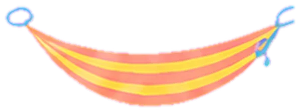

コラム — モヤンの中の人の連載 #対人関係#マインド
家族にイラッとした夜の、エリス — 気持ちをつくるのは出来事じゃない
「なんであの一言にこんなに腹が立ったんだろう」。その答えを、論理療法のABC理論が静かに教えてくれます。夫婦・親子・職場、ぜんぶに効く心の整理術。
更新日: 2026年7月12日
「言ってくれればやったのに」って言われて、なんだかすごくモヤモヤしたの…
そのモヤモヤ、実は「言葉そのもの」じゃなくて、あいだにある「受け取り方」から生まれてるのかもしれないよ。
 AとCのあいだには、いつもBがいる
AとCのあいだには、いつもBがいる
エリスのABC理論では、A(出来事)が直接C(感情)を生むのではなく、あいだにあるB(ビリーフ=受け取り方)が感情をつくると考えます。同じ一言(A)でも、「私ばかり損している“はずだ”」というBを通せば怒りに、「お互い余裕がないんだな」というBを通せば少しのさみしさに変わる。出来事は同じでも、感情は変わるのです。
ポイントは、怒りを「感じてはいけない」という話ではないこと。感情はいつでも正当です。ただ、その感情がどのBから来たのかが見えると、感情に「振り回される時間」が短くなります。

モヤンふんふん。ここまでは、わかったよ。

「〜すべき」を見つけたら、半分ゆるめる
エリスが注目したのは、「絶対に〜でなければならない」「〜すべきだ」という形のビリーフ(イラショナル・ビリーフ)でした。「母親なら常に笑顔でいるべき」「家族なら言わなくても察するべき」——この“べき”が強いほど、現実とのズレが苦しみになります。
おすすめは、“べき”を消すことではなく、半分だけゆるめること。「察するべき」→「察してくれたらうれしい」。「常に笑顔でいるべき」→「笑顔でいられたらいいな、無理な日もある」。言葉の形を変えるだけで、同じ現実の重さが変わります。これはカウンセリングの技でもあり、今夜から台所で使える技でもあります。
← コラム一覧へ
 キャリコン学びピクニック
キャリコン学びピクニック サニー先生
サニー先生